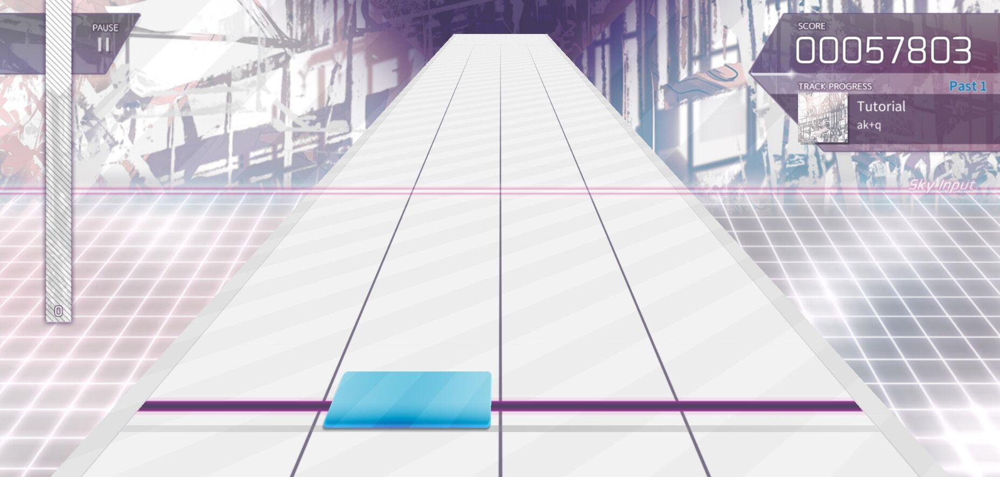
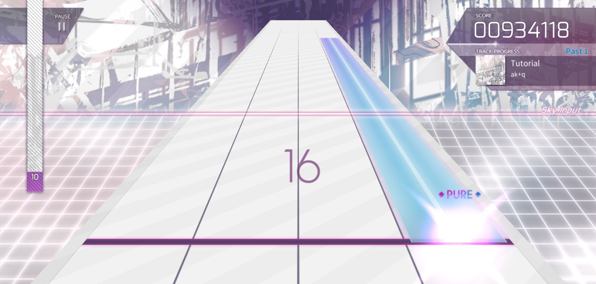
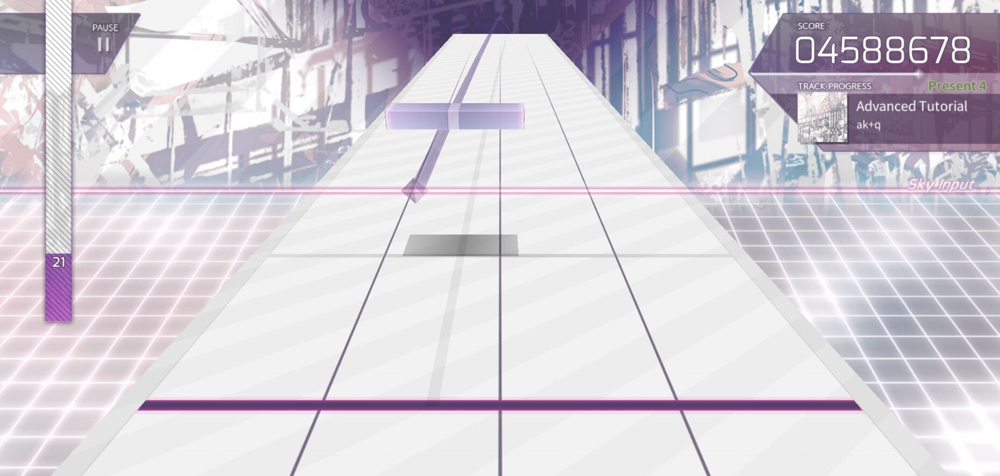
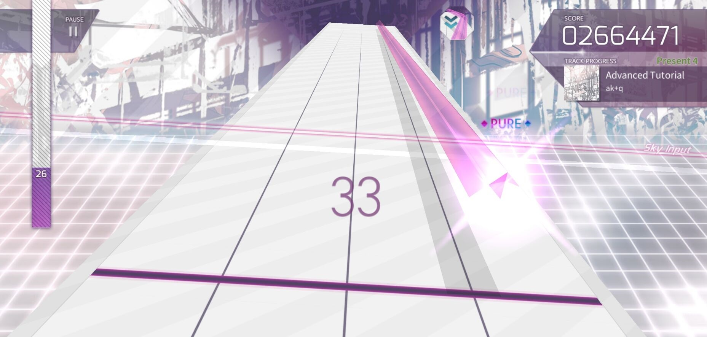

游戏系统
铺面难度
游戏中有三个难度可选：Past、Present、Future，可分别简记为PST、PRS、FTR。除愚人节谱面以外，PST难度等级由1到6，PRS难度等级由3到9，FTR难度等级由6到10。目前仅有的两首PST等级为6，FTR等级为10的曲目是Grievous Lady和Fracture Ray。目前唯一一个PST等级比FTR高的曲目是饱含谱师恶意的dropdead。
音符和轨道
和一般的移动端音游不同，Arcaea的轨道分为两种：地面和天空。地面轨道和一般的下落式相似，天空轨道则包含3D操作。
- 地面音符
- Tap：在音符底部到达判定线内时直接单击即可。
 - Hold：接触判定线时一直按住，长按至音符尾部到达判定线即可放手。

- Tap：在音符底部到达判定线内时直接单击即可。
- 天空音符
- Tap：在到达判定面时直接单击即可。天空音符永远只会出现在Trace（轨道线）上，Trace的判定末端会以一个小黑块的形式显示在屏幕上（但并不一定在Sky Input线上）
 - Arc：即音弧，也被众多玩家称为“蛇”。接触"天空"判定线时按住并按照形状滑动。同一个这样的音符的note必须用同一个手指，若试图换成另一只手指糊过去时会导致断连，不同颜色的Arc用同一根手指接也是这样（特殊情况除外，例如两三个不同颜色的Arc重合或是Arc转弯时），并且在高难度曲目中会经常出现必须双手交叉甚至中途换手才能打的配置。Arc的默认颜色为左手蓝右手红（在绝大多数谱面中反手打arc会导致两根手指拧成麻花引起断连说的就是你Red and Blue，但有时反手可能会降低谱面难度）

- Tap：在到达判定面时直接单击即可。天空音符永远只会出现在Trace（轨道线）上，Trace的判定末端会以一个小黑块的形式显示在屏幕上（但并不一定在Sky Input线上）
游戏判定
游戏中单音符的判定有三种：PURE、FAR和LOST。
| 判定等级 | 误差时间(ms) |
|---|---|
| PURE | Max PURE: 0~25 Early/Late PURE: 26~50 |
| FAR | 51~100 |
| LOST | 101~120或漏键 |
得分和评级
游戏的单谱面满分为1000万分+谱面note数，没有连击分。
- 对于PURE判定，每个PURE会获得该Note的全部基本分（1000万/谱面Note总数量），Max PURE会额外增加1分。
- 对于FAR判定，得分为基本分的一半，没有额外加分。
- 需要注意的是，基本分的上限为1000万，额外加分没有上限。
单曲得分可按照以下公式计算：得分＝1000万*(PURE数+0.5FAR数)/Note总数+Max PURE数。
结算时根据得分会得出评级，其中980万分以上是EX，950万分以上是AA，920万分以上是A，890万分以上是B，860万分以上是C，其余是D。